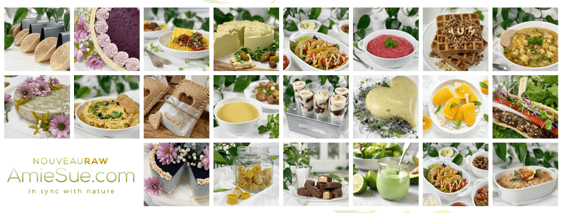

Site Update | 14 Day Free Trial | New Recipe Categories
Good morning, afternoon, or evening…whenever this post should find you. It feels like it’s been a while since I have touched base with you outside of a recipe. Even though it may seem like things have been quiet on the site, we have been super busy working in the background. So, I thought it was a good time to sit down and share a few things with you.

FREE 14-Day Trial
Roughly one month ago, we created the ability for non-members to join the site for 14 days, free of charge. As we were building the pages to create this, I told Bob that it was important to me that we DON’T ask for a credit card when signing up for this FREE offer. I didn’t want any strings attached should a person find that the site isn’t a good fit for them. If you have any friends, family, or even new acquaintances in your life that might enjoy what I have to offer, please feel free to share the following link – https://nouveauraw.com/14-day-free-trial-no-credit-card-required/.
Amazon Store
Many of you have reached out asking what’s up with the Amazon store. The Amazon store is still down. Chris, our IT specialist, is working hard to fix it. The plugin that Amazon provided way back when I added this feature to the site is no longer supported by them, which creates a lot of inactive links on the recipe posts. If you see a link with a line through it, it means the store link is broke. It doesn’t mean that I decided not to add the ingredient to the recipe. What a challenge rectifying this issue! We hope to have it up and running soon. I greatly appreciate your patience.
Life Tidbits & New Cooked Recipes/Categories
I have still been working hard in the kitchen, but to be honest…with everything going on in the world, it’s been a bit more challenging. Just like you, there are days when my heart is weighed down with such heaviness, making it difficult to find inspiration. Rather than fighting it and forcing myself to go against it, I have been embracing it, giving myself time to observe so I can grow from the current events.
Instead of always being in the kitchen, I have been spending a lot of time outdoors, mowing, weeding, planting, pruning, etc. which seems to be very calming and therapeutic for my heart. I have also adopted a new mindset when it comes to my daily chores. I shared this on my personal Facebook page, but I thought I would extend its reach here.
My new motto is, “I GET to…” No longer do I tell me myself that “I have to…” It’s all about changing my mindset that turns chores into moments of gratitude, viewing them as blessings instead of overwhelming, neverending, body aching tasks. The moment the words “I GET to” escape my mouth, my brain automatically starts pulling up positive thoughts; from there, I seek any possible blessings that come from the task at hand. Allow me to share a few examples that I have faced in the past two weeks.
“I get to oil the deck” – Gratitude sets in, and I tell myself that I have never had a beautiful deck like this. I get to stand on top of it and view the stunning horizon of the gorge. I get to sit under it and enjoy the rainstorms while staying dry and cozy. I am thankful my body can bend and move in ways so I can be on my knees to yield a brush so that I can restore it to its true beauty.
“I get to weed eat along the water.” – Gratitude sets in, and I tell myself that the water is so peaceful and calming. It reminds me that life just keeps going no matter what I face daily. The water brings life to our fruit trees and vegetation. By keeping the weeds down, it reduces fire hazards. I am thankful that my body has the strength to handle the weed-eating machine, allowing me to complete the task with grace and ease.
“I get to mow the fields again and again and again.” Gratitude sets in, and I tell myself that I am thankful for the rolling green hills that lead to our house. Not only do we get to enjoy them, but so do those passing by. Last time I mowed, we got a text message from a nearby neighbor who thanked us for providing such a scenic space for them to walk by every morning. I am thankful that my body gives me enough energy to handle the bumps and twists of the land, to stay energized to see the job through to the end. And still, walk the next day. (haha)
By the time I am done with my chore, I feel accomplished, blessed, tired (but in a healthy way of body movement), I feel full of gratitude and love. It may sound silly, but I encourage you to try it… it’s a process but one that will help reset your thought process into a more positive, less stressful way.
Recipe Inspiration
In between chores, snippets of inspiration find their way in. As always, I have been developing and documenting my latest culinary creations, which led me to add three new categories to the Cooked Vegan Recipes. I will list them out, along with the recipes that are in them. I didn’t send out emails for these new recipes. Instead, I am sharing them here.
All crusts are vegan, gluten-free, oil-free, made with minimal whole food ingredients, and easy on the budget.
-

-
Buckwheat Pizza Crust
-

-
Sweet Potato Pizza Crust
-

-
Thin Crust Quinoa Pizza
All wraps and tortillas are vegan, gluten-free, oil-free, made with minimal whole food ingredients, flexible, wrappable, and freezable.
-

-
Brown Rice Flour Tortillas
-

-
Chickpea Flour and Oat Wraps
-

-
Everything Bagel Flax Wrap
-

-
Oat Tortillas
-

-
White Sweet Potato Wraps
-

-
Tigernut Flour and Oat Wraps
-

-
Red Lentil Wraps
All waffles are vegan, gluten-free, oil-free, made with minimal whole food ingredients. They are wonderful to create for meal prepping and can be frozen for up to 3 months.
-

-
Cheesy Mashed Potato Waffles
-

-
Cinnamon Banana Oat Waffles
-

-
Grand Slam Mashed Potato Waffles
-

-
Lemon Poppy / Basil Seed Waffles
-

-
Oatmeal Waffles
-

-
Simple Oat Waffles
Well, I think that’s it for now. I hope this post finds you well. Please keep in touch through the Facebook group and in the comment section under the recipes. It means the world to me to hear from you. blessings, amie sue
© AmieSue.com